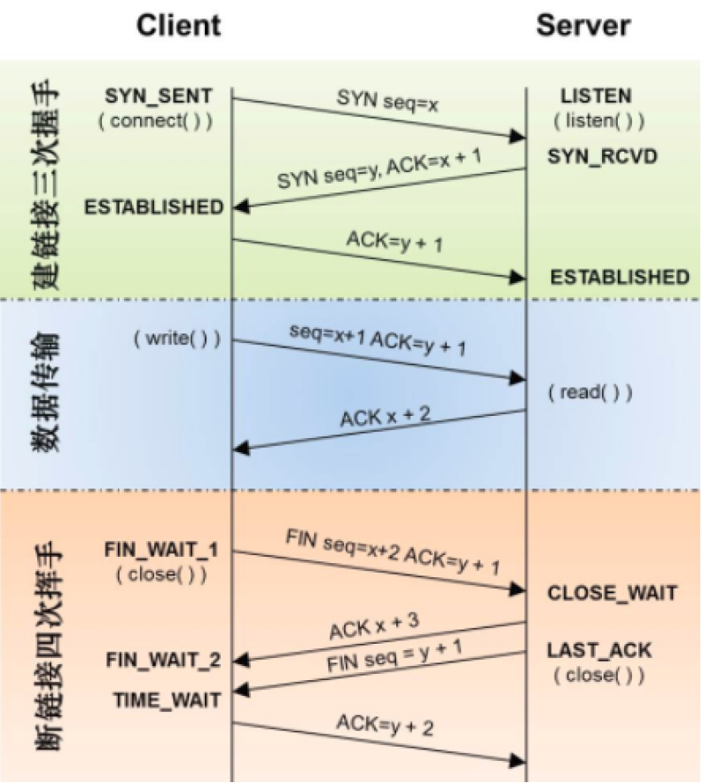

TCP
三次握手
-
第一步: 客户端发送SYN
- Client将标志位SYN置为1，表示请求建立连接。
- 客户端还选择一个初始序列号（ISN），用于后续的数据传输。
-
第二步：服务器回应SYN-ACK
- 服务器收到客户端的SYN后，返回一个带有SYN和ACK标志位的TCP报文，表示接受连接请求，并确认客户端的初始序列号。
- 服务器也选择一个初始序列号，用于服务器到客户端的数据传输。
-
第三步：客户端发送ACK
- 客户端收到服务器的SYN-ACK后，向服务器发送一个带有ACK标志位的TCP报文，表示确认连接建立。
- 此时，双方的连接已成功建立，可以开始进行数据传输。
四次挥手
- 第一步 - 客户端发送FIN：
- 客户端在数据传输完成后，发送一个带有FIN标志位的TCP报文，表示数据传输结束。
- 第二步 - 服务器回应ACK：
- 服务器收到客户端的FIN后，发送一个带有ACK标志位的TCP报文，确认收到客户端的关闭请求。
- 第三步 - 服务器发送FIN：
- 服务器在准备关闭连接时，发送一个带有FIN标志位的TCP报文，表示服务器也准备关闭连接。
- 第四步 - 客户端回应ACK：
- 客户端收到服务器的FIN后，发送一个带有ACK标志位的TCP报文，确认收到服务器的关闭请求。
- 此时，连接完全关闭，双方都进入CLOSED状态。
UDP
- 无连接：只知道对端的IP和端口号就可以发送，不需要实现建立连接。
- 不可靠：**没有确认机制， 没有重传机制。**如果因为网络故障该段无法发到对方， UDP协议层也不会给应用层返回任何错误信息。
- 面向数据报： 应用层交给UDP多长的报文， UDP原样发送既不会拆分，也不会合并。如果发送端调用一次
sendto, 发送100个字节, 那么接收端也必须调用对应的一次recvfrom, 接收100个 字节，而不能循环调用10次recvfrom, 每次接收10个字节。所以UDP不能够灵活的控制读写数据的次数和数量。